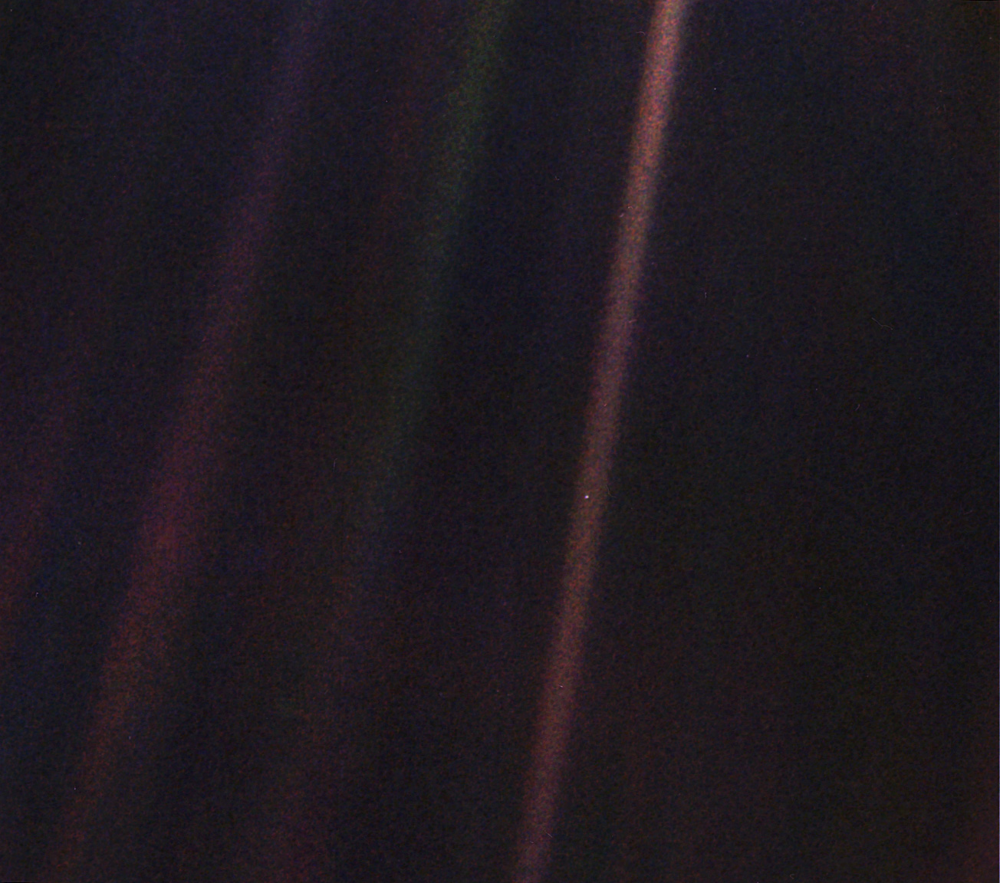

Environmental Data Visualization
A course on the theory and practice of communication through data visualization
Preface
This is the course website for ‘EA 078 PZ - Environmental Data Visualization’. In this course, you will learn to import, manipulate, and visualize data using R, with hands-on examples. You will also learn the theory and ethics of environmental data visualization. Throughout the course, you will have the opportunity to practice and apply the skills and judgment of data visualization to provide effective illustrations of real-world data in order to persuade, inform, and communicate.
This book is created using the Quarto publishing system in order to provide an example of its use in environmental data visualization and as a course resource tool for display of coding examples and visualization.
License
This website is free to use, and is licensed under the Creative Commons Attribution-ShareAlike 4.0 License.


Earth Selfie
Figure 1 is the iconic Pale Blue Dot image taken by the Voyager 1 space probe in 1990 from beyond Neptune. The Earth in this image is only a single pixel in size.
